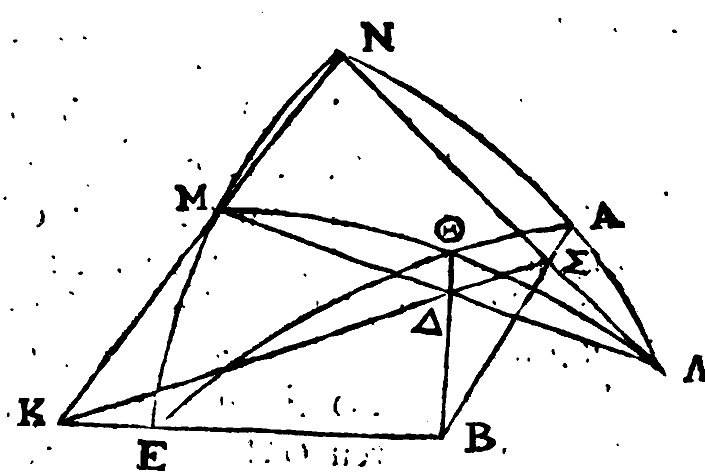

Proposition III.1 — Prop. I. Theor. (Latin, Halley 1758)¶
Menelai Alexandrini Sphaericorum Lib. III Prop. I. Theor. (Halley 1758, pp. 80–82)


Prop. I. Theor. (Halley 1758, pp. 80–82)¶
Enuntiatio (Halley 1758, p. 80)
Sint in superficie Sphaerae duo arcus circulorum magnorum, ΝΜΕ, ΝΑΛ inter quos ducantur alii duo arcus ΕΘΑ, ΛΘΜ occurrentes invicem in puncto Θ: dico sinum arcus ΑΝ esse ad sinum arcus ΑΛ in ratione composita ex ea quam habet sinus arcus ΝΕ ad sinum arcus ΕΜ, & ex ea quam habet sinus arcus ΜΘ ad sinum arcus ΘΛ.
[§3.1 · Demonstratio, pp. 80–81] Ponatur punctum Β centrum esse Sphaerae, & jungantur rectae ΛΝ, ΛΜ, ΜΝ, ΕΒ, & ΘΒ occurrens subtensae ΜΛ in Δ, & ΑΒ occurrens ipsi ΝΛ in Σ, & ducta ΔΣ producatur usque dum conveniat cum recta ΜΝ producta in Κ; & erit punctum Κ in plano utriusque circuli ΑΘΕ, ΝΜΕ. Sed puncta Ε, Β sunt etiam in iisdem planis; quare ΚΕΒ erit linea recta. Cum autem punctum Σ est in intersectione rectarum ΑΒ, ΝΛ, & punctum Δ in ipsarum ΘΒ, ΜΛ; ac punctum Κ est in productâ ΣΔ; erunt tria puncta Σ, Δ, Κ in plano trianguli ΝΛΜ: erit igitur ΝΣ ad ΣΛ in ratione composita ex ratione quam habet ΝΚ ad ΚΜ & ratione quam habet ΜΔ ad ΔΛ, per sequens Lemma I. Sed ΝΚ est ad ΚΜ sicut normalis cadens de puncto Ν super diametrum ΚΕΒ ad normalem de puncto Μ super eandem, per Lemma II. Est autem normalis de puncto Ν sinus arcus ΕΝ, & normalis de puncto Μ est sinus arcus ΜΕ; adeoque ΝΚ est ad ΚΜ ut sinus arcus ΝΕ ad sinum arcus ΜΕ. Eodem modo patebit ΝΣ esse ad ΣΛ ut sinus arcus ΝΑ ad sinum arcus ΑΛ; & ΜΔ esse ad ΔΛ ut sinus arcus ΜΘ ad sinum arcus ΘΛ: quapropter sinus arcus ΑΝ est ad sinum arcus ΑΛ in ratione composita ex ratione sinus arcus ΝΕ ad sinum arcus ΜΕ, & ex ea quam habet sinus arcus ΜΘ ad sinum arcus ΘΛ. Q. E. D.

[§3.2 · Casus Parallelarum & Inversio, pp. 81–82] Pone jam rectam ΔΣ parallelam esse ipsi ΜΝ; & compleantur semicirculi ΕΜΝ, ΕΘΑ, occurrentes invicem ad Κ. Itaque quoniam in duobus planis ΕΝΚ, ΕΘΚ duae rectae ΣΔ, ΜΝ parallelae sunt, erit quoque communis sectio horum planorum, nempe recta ΕΒΚ, etiam ipsis ΣΔ, ΜΝ parallela, ut ex 9na XI. Eucl. constabit. Quoniam vero triangula quaedam fiunt quorum latera sunt parallela, scilicet angulorum ad diametrum ΕΒΚ & ad rectas normales ab ipsis Ν & Μ cadentes super eandem; & recta ΣΔ parallela est ipsi ΜΝ; erunt duae normales illae aequales: ac proinde sinus arcus ΕΝ aequalis erit sinui arcus ΕΜ; quod contingit cum duo arcus ΕΜ, ΕΝ simul sumpti aequales fuerint semicirculo. Cum igitur sinus hi aequales fuerint, ratio eorum erit ratio aequalitatis. Invertendo igitur, ratio sinus arcus ΑΛ ad sinum arcus ΑΝ composita erit ex ratione sinus arcus ΘΛ ad sinum arcus ΜΘ, & ex ratione sinus arcus ΜΕ ad sinum arcus ΕΝ. Q. E. D.